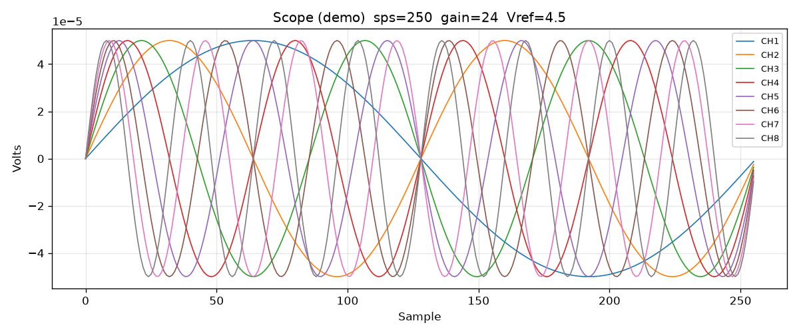

Capture
Frames 1024
Vref 4.5
Gain 24
Acquire
Continuous (segmented)
Chunk frames 256
Duration s 0
StartStop
Idle (not zero-gap USB)
Presets
Input short noise
Internal test signal
Impedance @ 31.2 Hz
Impedance @ fDR/4
Channels CH1…CH8 · Scope zoom · Redraw
ScopeFFTHistogramAnalysis
